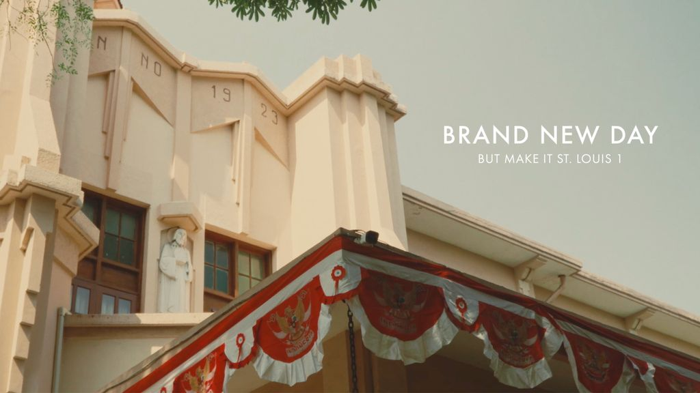
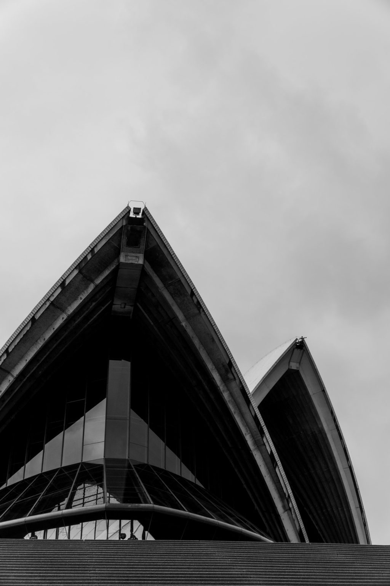
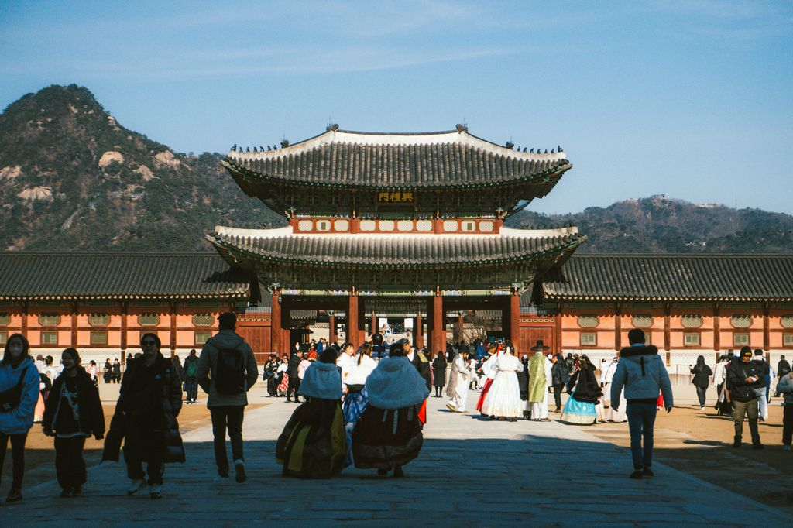
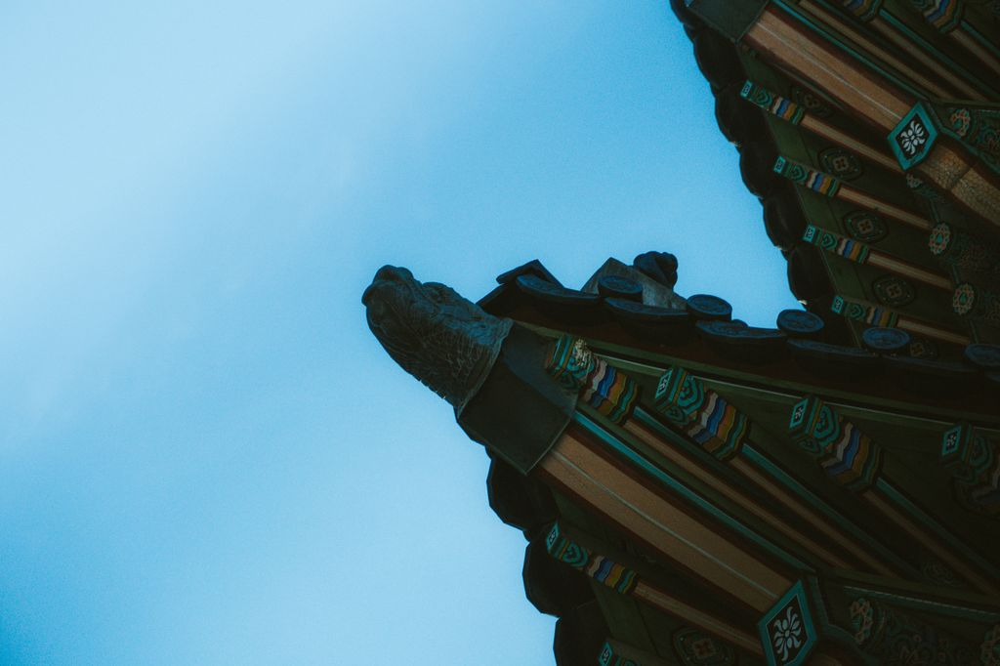
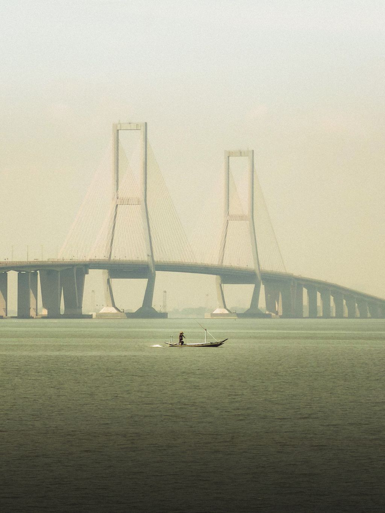
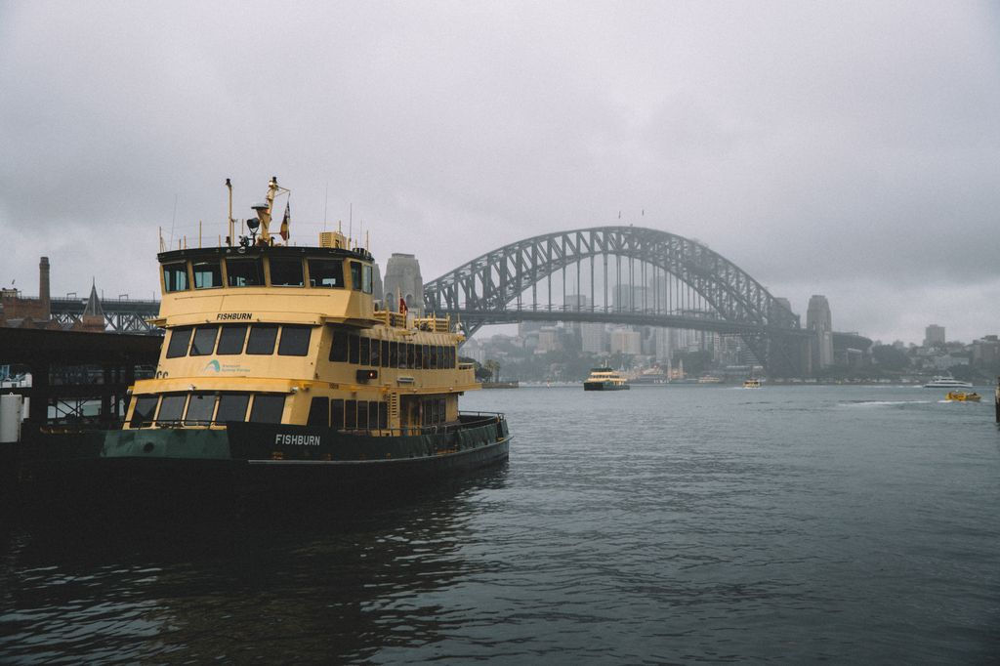
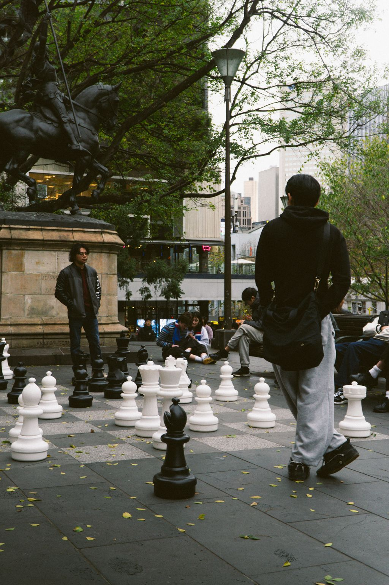
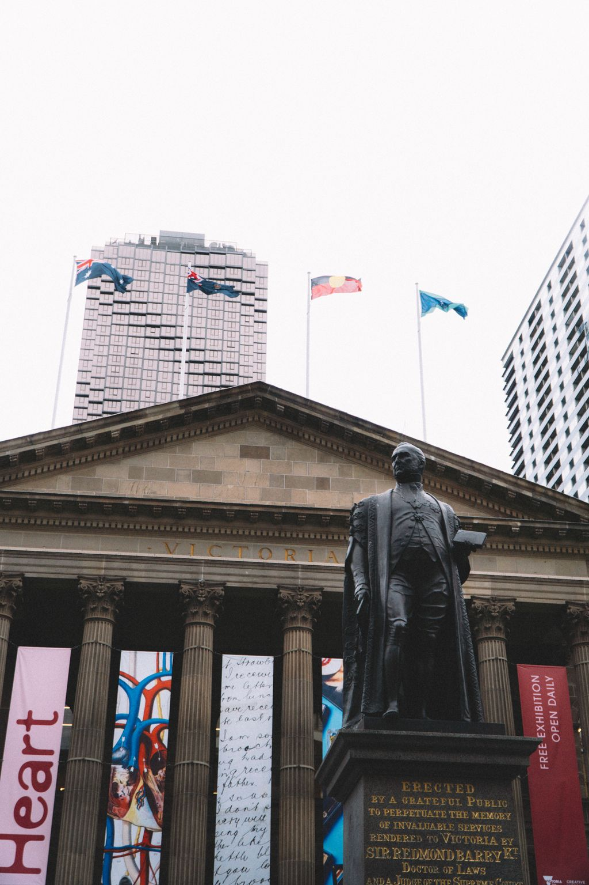
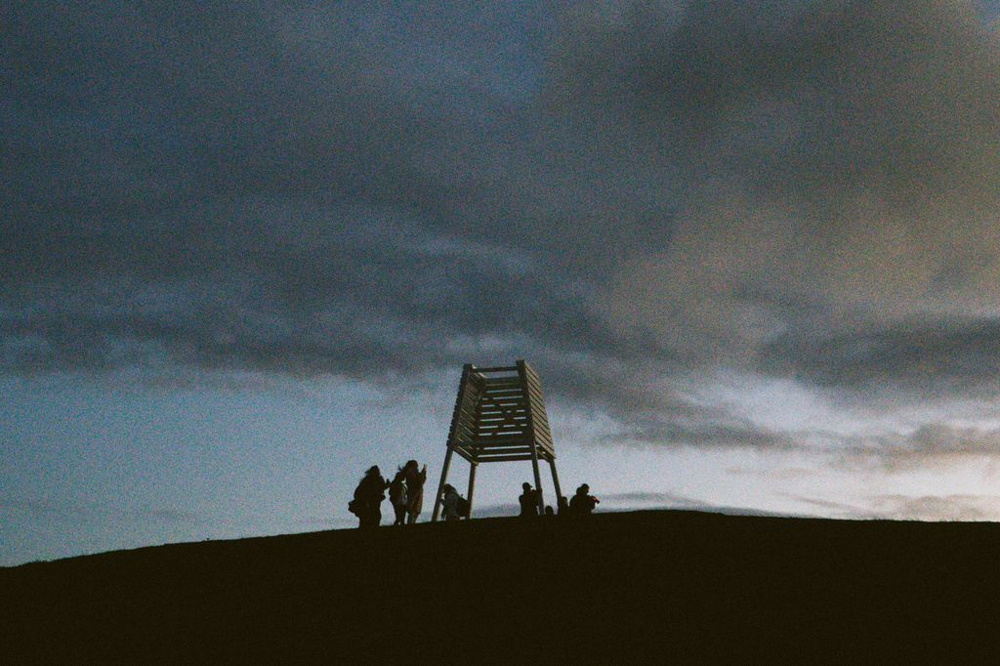

St. Louis 1 – Brand New Day
- Type
- Marketing campaign
- Year
- 2026

I’m Prinze Harly, a student passionate about photography, filmmaking, and engineering — documenting the world through a camera while preparing to build things beyond it.
Eight photographs and two films, 2024–2026. Plates are listed in the order they were taken.







Two short films. Each opens in a player here.


I’m currently a student exploring the intersection between creativity and engineering.
Photography and filmmaking have become an important part of how I see and understand the world. I enjoy capturing architecture, people, places, and everyday moments.
At the same time, I’m preparing to pursue engineering and build a future that combines technical thinking with creativity.
Contact
Interested in working together, discussing photography, or simply saying hello?